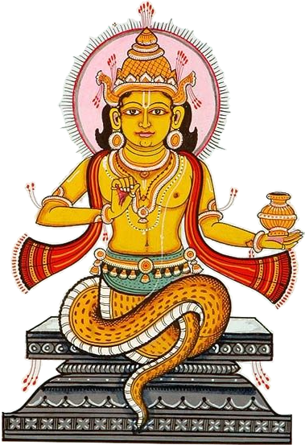

॥ केतुस्तोत्रम् ॥

श्रीगणेशाय नमः ।
अथ केतुस्तोत्रप्रारम्भः ।
ॐ अस्य श्री केतुस्तोत्रमहामन्त्रस्य वामदेव ॠषिः ।
अनुष्टुप्छन्दः । केतुर्देवता ।
केतुप्रसादसिद्ध्यर्थे जपे विनियोगः ॥
गौतम उवाच ।
मुनीन्द्र सूत तत्त्वज्ञ सर्वशास्त्रविशारद ।
सर्वरोगहरं ब्रूहि केतोः स्तोत्रमनुत्तमम् ॥ १ ॥
सूत उवाच ।
शृणु गौतम वक्ष्यामि स्तोत्रमेतदनुत्तमम् ।
गुह्याद्गुह्यतमं केतोः ब्रमणा कीर्तितं पुरा ॥ २ ॥
आद्यः कराळवदनो द्वितीयो रक्तलोचनः ।
तृतीयः पिङ्गळाक्षश्च चतुर्थो ज्ञानदायकः ॥ ३ ॥
पञ्चमः कपिलाक्षश्च षष्ठः कालाग्निसन्निभः ।
सप्तमो हिमगर्भश्च् तूम्रवर्णोष्टमस्तथा ॥ ४ ॥
नवमः कृत्तकण्ठश्च दशमः नरपीठगः ।
एकादशस्तु श्रीकण्ठः द्वादशस्तु गदायुधः ॥ ५ ॥
द्वादशैते महाक्रूराः सर्वोपद्रवकारकाः ।
पर्वकाले पीडयन्ति दिवाकरनिशाकरौ ॥ ६ ॥
नामद्वादशकं स्तोत्रं केतोरेतन्महात्मनः ।
पठन्ति येऽन्वहं भक्त्या तेभ्यः केतुः प्रसीदति ॥ ७ ॥
कुळुक्थधान्ये विलिखेत् षट्कोणं मण्डलं शुभम् ।
पद्ममष्टदळं तत्र विलिखेच्च विधानतः ॥ ८ ॥
नीलं घटं च संस्थाप्य दिवाकरनिशाकरौ ।
केतुं च तत्र निक्षिप्य पूजयित्वा विधानतः ॥ ९ ॥
स्तोत्रमेतत्पठित्वा च ध्यायन् केतुं वरप्रदम् ।
ब्राह्मणं श्रोत्रियं शान्तं पूजयित्वा कुटुम्बिनम् ॥ १० ॥
केतोः कराळवक्त्रस्य प्रतिमां वस्त्रसंयुताम् ।
कुम्भादिभिश्च संयुक्तां चित्रातारे प्रदापयेत् ॥ ११ ॥
दानेनानेन सुप्रीतः केतुः स्यात्तस्य सौख्यदः ।
वत्सरं प्रयता भूत्वा पूजयित्वा विधानतः ॥ १२ ॥
मूलमष्टोत्तरशतं ये जपन्ति नरोत्तमाः ।
तेषां केतुप्रसादेन न कदाचिद्भयं भवेत् ॥ १३ ॥
इति केतुस्तोत्रं सम्पूर्णम् ॥
.. кэтустотрам ..
атха кэтустотрапра̄рамбхах̣ .
ом̣ асйа ш́рӣ кэтустотрамаха̄мантрасйа ва̄мадэва р̣̄ших̣ .
анушт̣упчхандах̣ . кэтурдэвата̄ .
кэтупраса̄дасиддхйартхэ джапэ винийогах̣ ..
гаутама ува̄ча .
мунӣндра сӯта таттваджн̃а сарваш́а̄стравиш́а̄рада .
сарварогахарам̣ брӯхи кэтох̣ стотрамануттамам .. 1 ..
сӯта ува̄ча .
ш́р̣н̣у гаутама вакшйа̄ми стотрамэтадануттамам .
гухйа̄дгухйатамам̣ кэтох̣ браман̣а̄ кӣртитам̣ пура̄ .. 2 ..
а̄дйах̣ кара̄л̤авадано двитӣйо ракталочанах̣ .
тр̣тӣйах̣ пин̇гал̤а̄кшаш́ча чатуртхо джн̃а̄нада̄йаках̣ .. 3 ..
пан̃чамах̣ капила̄кшаш́ча шашт̣хах̣ ка̄ла̄гнисаннибхах̣ .
саптамо химагарбхаш́ч тӯмраварн̣ошт̣амастатха̄ .. 4 ..
навамах̣ кр̣ттакан̣т̣хаш́ча даш́амах̣ нарапӣт̣хагах̣ .
эка̄даш́асту ш́рӣкан̣т̣хах̣ два̄даш́асту гада̄йудхах̣ .. 5 ..
два̄даш́аитэ маха̄крӯра̄х̣ сарвопадравака̄рака̄х̣ .
парвака̄лэ пӣд̣айанти дива̄караниш́а̄карау .. 6 ..
на̄мадва̄даш́акам̣ стотрам̣ кэторэтанмаха̄тманах̣ .
пат̣ханти йэ'нвахам̣ бхактйа̄ тэбхйах̣ кэтух̣ прасӣдати .. 7 ..
кул̤уктхадха̄нйэ виликхэт шат̣кон̣ам̣ ман̣д̣алам̣ ш́убхам .
падмамашт̣адал̤ам̣ татра виликхэчча видха̄натах̣ .. 8 ..
нӣлам̣ гхат̣ам̣ ча сам̣стха̄пйа дива̄караниш́а̄карау .
кэтум̣ ча татра никшипйа пӯджайитва̄ видха̄натах̣ .. 9 ..
стотрамэтатпат̣хитва̄ ча дхйа̄йан кэтум̣ варапрадам .
бра̄хман̣ам̣ ш́ротрийам̣ ш́а̄нтам̣ пӯджайитва̄ кут̣умбинам .. 10 ..
кэтох̣ кара̄л̤авактрасйа пратима̄м̣ вастрасам̣йута̄м .
кумбха̄дибхиш́ча сам̣йукта̄м̣ читра̄та̄рэ прада̄пайэт .. 11 ..
да̄нэна̄нэна супрӣтах̣ кэтух̣ сйа̄ттасйа саукхйадах̣ .
ватсарам̣ прайата̄ бхӯтва̄ пӯджайитва̄ видха̄натах̣ .. 12 ..
мӯламашт̣оттараш́атам̣ йэ джапанти нароттама̄х̣ .
тэша̄м̣ кэтупраса̄дэна на када̄чидбхайам̣ бхавэт .. 13 ..
ити кэтустотрам̣ сампӯрн̣ам ..